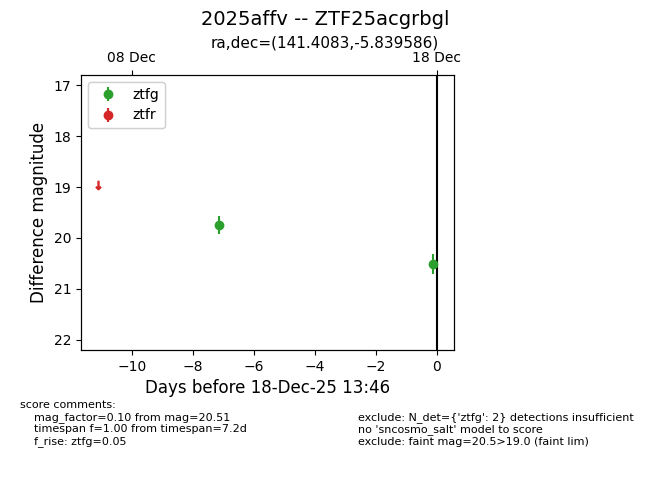
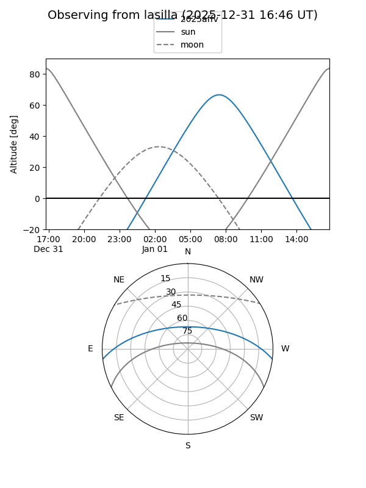
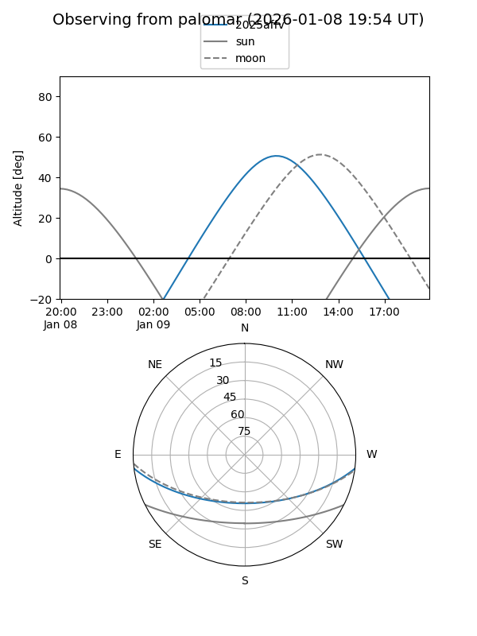

2025affv
Target 2025affv at 2025-12-20 13:49
Aliases and brokers:
FINK: fink-portal.org/ZTF25acgrbgl
Lasair: lasair-ztf.lsst.ac.uk/objects/ZTF25acgrbgl
ALeRCE: alerce.online/object/ZTF25acgrbgl
TNS: wis-tns.org/object/2025affv
YSE: ziggy.ucolick.org/yse/transient_detail/2025affv
alt names
ZTF25acgrbgl (ztf,fink_ztf)
2025affv (tns,yse)
Coordinates:
equatorial (ra, dec) = 141.4083,-5.83959
equatorial (HMS+DMS) = 09:25:37.98,-05:50:22.51
galactic (l, b) = (238.5602,+30.35470)
Flags:
Photometry:
last ztfg=20.51
2 ztfg detections
Lightcurve

Visibility


Additional plots